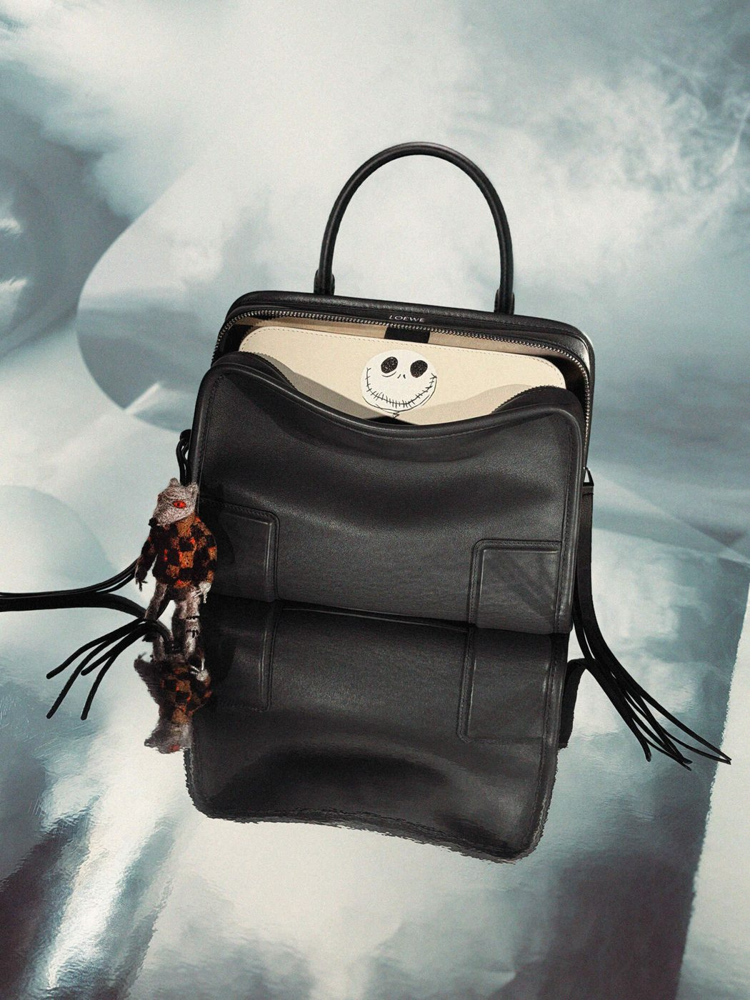
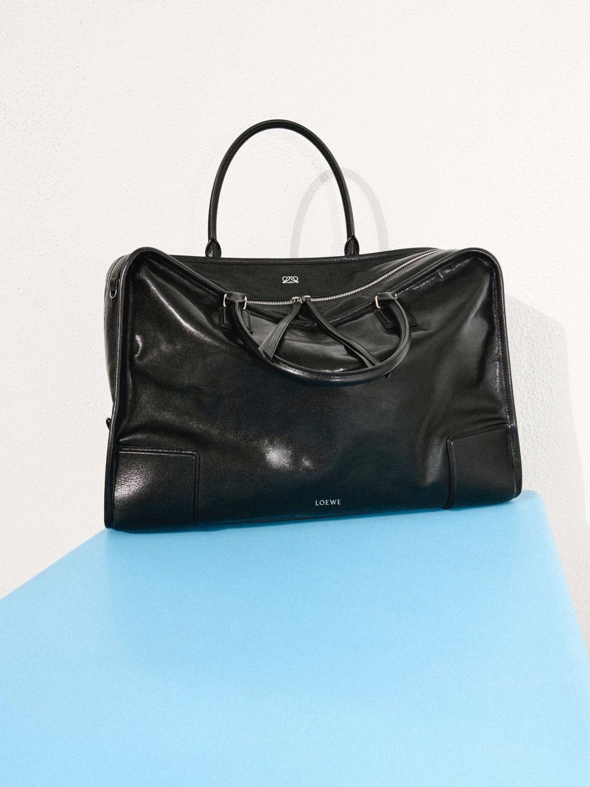
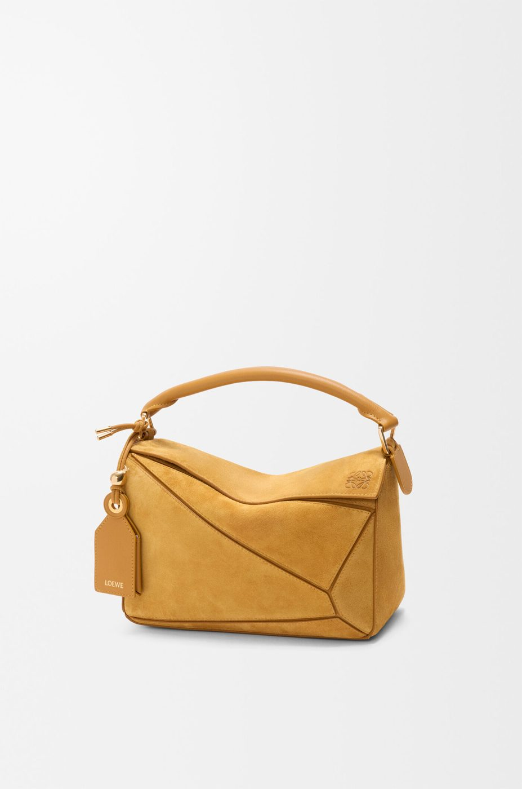
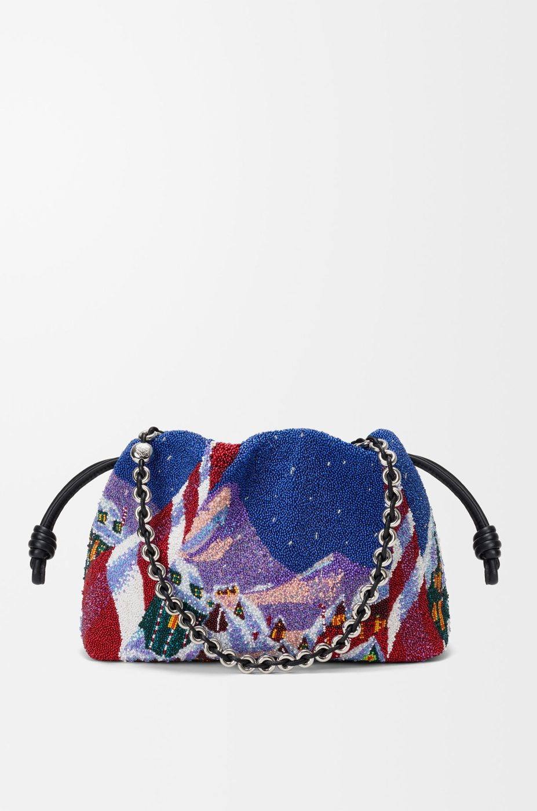
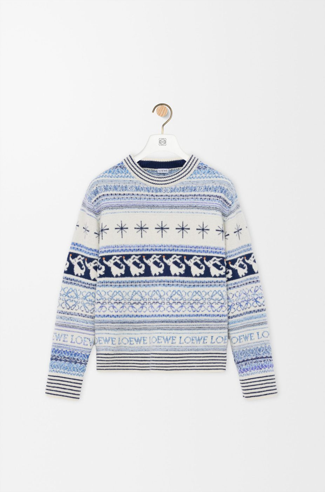
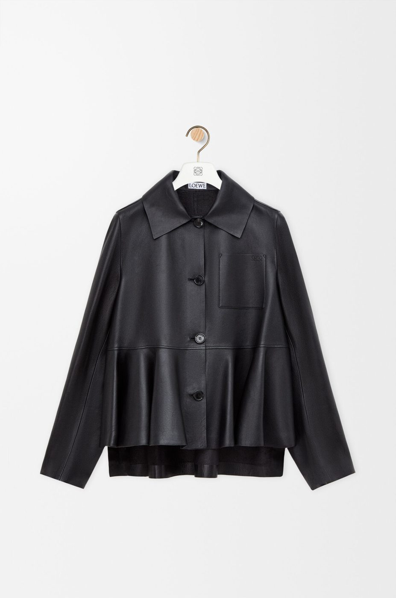

Loewe
Company study · 2026-11-20
Craft with a wink. Loewe sets soft, exact leather bags and plain knitwear against stage-blue sets and a pale plinth, and this season adds a playful collaboration campaign with a skeleton-faced character on a fringed wrap. Products sit alone on light gray. Leather black, ochre and ice blue run through it, with one painterly print as the accent.
 (01)
(01)


(02)

(03)

(04)

(05)

(06)

(07)Palette · measured from images
#F4F4F4#232122#3A3E48#C0C8C8#A9DDF6#D69D4FVisual themes
- Leather as sculpture
- Key motifs: faceted top-handle bag, glossy duffel, structured jacket. Sub motifs: smooth leather, handles, charms and fringe.
- Stage-blue campaign
- Key motifs: icy blue sets, cloud backdrops, floating bags. Sub motifs: paper-cut characters, a pale plinth.
- Plain knit, patterned knit
- Key motifs: Fair Isle crew neck in powder blue and cream. Sub motifs: gray hem, soft wool look.
- Painterly print
- Key motifs: red, white and blue brush print on a gathered clutch. Sub motifs: chain strap, knotted corners.
Color palette
- Studio white #f4f4f4
- The ground of every product tile.
- Leather black #232122
- Jackets, duffel and bags.
- Ink blue #3a3e48
- Dark backdrops and deep shadow.
- Cloud gray #c0c8c8
- Campaign cloud and plinth shadow.
- Ice blue #a9ddf6
- Campaign sets and the Fair Isle knit.
- Slate #72868d
- Storm-cloud backdrop.
Visual elements
- Photography
- Campaign images with sculptural sets and a single object; products shot alone on a light gray ground, flat on a hanger or upright.
- Type and graphics
- The anagram logo in capitals, and LOEWE lettering printed on collaboration pieces.
- Layout habits
- The home page leads with seasonal banners and product stories; navigation reads Women, Men, Gifts, Art & Craft, Stories.
Notable products
- Faceted top-handle bag
- Ochre leather with a luggage tag.
- Gathered chain clutch
- Painterly print with knotted corners.
- Fair Isle sweater
- Powder-blue and cream crew-neck knit.
Method and limits
- Palette basis
- the seven board images; k-means in Lab, six clusters kept; the light gray studio ground of the product tiles is part of the measurement; the sixth swatch, Ochre, is a warm leather tone taken from the faceted top-handle bag, in place of a near-gray cluster
- Limits
- Pages read 2026-11-20, plain HTTP fetch, no login: https://www.loewe.com/usa/en/home and the women, men, bags and ready-to-wear pages. Images are the site’s own at width 1400 of the same file. Fabric and leather types are not stated on the tiles; colors are measured from lit, edited photographs.
Credits and licenses
(01) Fringed cream and black wrap printed with a skeleton-faced character and LOEWE lettering, in a blue-lit box set. Loewe. Brand image, study use. source
(02) Black leather backpack-style bag with fringe and charms floating against a cloudy blue backdrop. Loewe. Brand image, study use. source
(03) Black glossy leather duffel on a pale blue plinth, SS27 pre-collection lookbook. Loewe. Brand image, study use. source
(04) Faceted top-handle bag in ochre leather with a tag, on a light gray ground. Loewe. Brand image, study use. source
(05) Gathered clutch with chain strap in a red, white and blue painterly print. Loewe. Brand image, study use. source
(06) Crew-neck knit in powder-blue and cream Fair Isle patterns with a gray hem. Loewe. Brand image, study use. source
(07) Black leather shirt jacket with a pleated peplum hem, on a hanger. Loewe. Brand image, study use. source